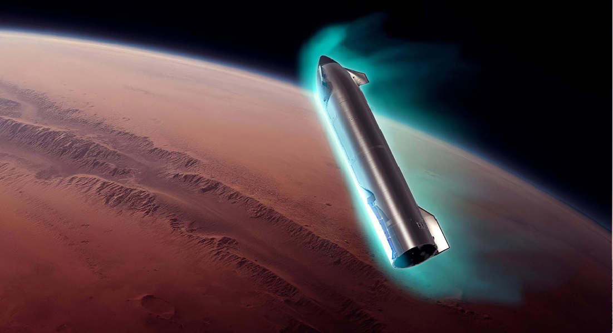

Group Representational Position Encoding
Group Representational Position Encoding
GRAPE（Group Representative Position Encoding）是一个基于群操作的位置编码统一框架。 GRAPE汇集了两种机制：
在乘性GRAPE中，一个位置\(n \in \mathbb{Z}\)（或\(t \in \mathbb{R}\)）用秩2偏斜生成器\(\mathbf{L} \in \mathbb{R}^{d \times d}\)可以表示为\(\mathbf{G}(n)=\exp(n\,\omega\,\mathbf{L})\)，产生一个具有闭式矩阵指数的相对、复合、保范数的映射。
当\(d/2\)平面是具有对数均匀谱的规范坐标对时，RoPE被精确地恢复。训练的对易子空间和紧凑的非对易子控件混合严格扩展了这种几何结构，以单计算头\(\mathcal{O}(d)\)和\(\mathcal{O}(r d)\)的成本捕获跨子空间特征耦合。
在加性GRAPE中，加性逻辑作为秩1（或低秩）的幂零操作出现，从而基于ALiBi和Forgetting Transformer（FoX）进行推广，同时保持精确的相对位置的表达和流式缓存能力。
总之，GRAPE为长上下文模型中的位置几何提供了一个包含RoPE和ALiBi等特例的基于原则的设计空间。
GRAPE (Group RepresentAtional Position Encoding) is a unified framework for positional encoding based on group actions. GRAPE brings together two families of mechanisms:
In Multiplicative GRAPE, a position \(n \in \mathbb{Z}\) (or \(t \in \mathbb{R}\)) acts as \(\mathbf{G}(n)=\exp(n\,\omega\,\mathbf{L})\) with a rank-2 skew generator \(\mathbf{L} \in \mathbb{R}^{d \times d}\), yielding a relative, compositional, norm-preserving map with a closed-form matrix exponential.
RoPE is recovered exactly when the \(d/2\) planes are the canonical coordinate pairs with log-uniform spectrum. Learned commuting subspaces and compact non-commuting mixtures strictly extend this geometry to capture cross-subspace feature coupling at \(\mathcal{O}(d)\) and \(\mathcal{O}(r d)\) cost per head, respectively.
In Additive GRAPE, additive logits arise as rank-1 (or low-rank) unipotent actions, recovering ALiBi and the Forgetting Transformer (FoX) as exact special cases while preserving an exact relative law and streaming cacheability.
Altogether, GRAPE supplies a principled design space for positional geometry in long-context models, subsuming RoPE and ALiBi as special cases.
